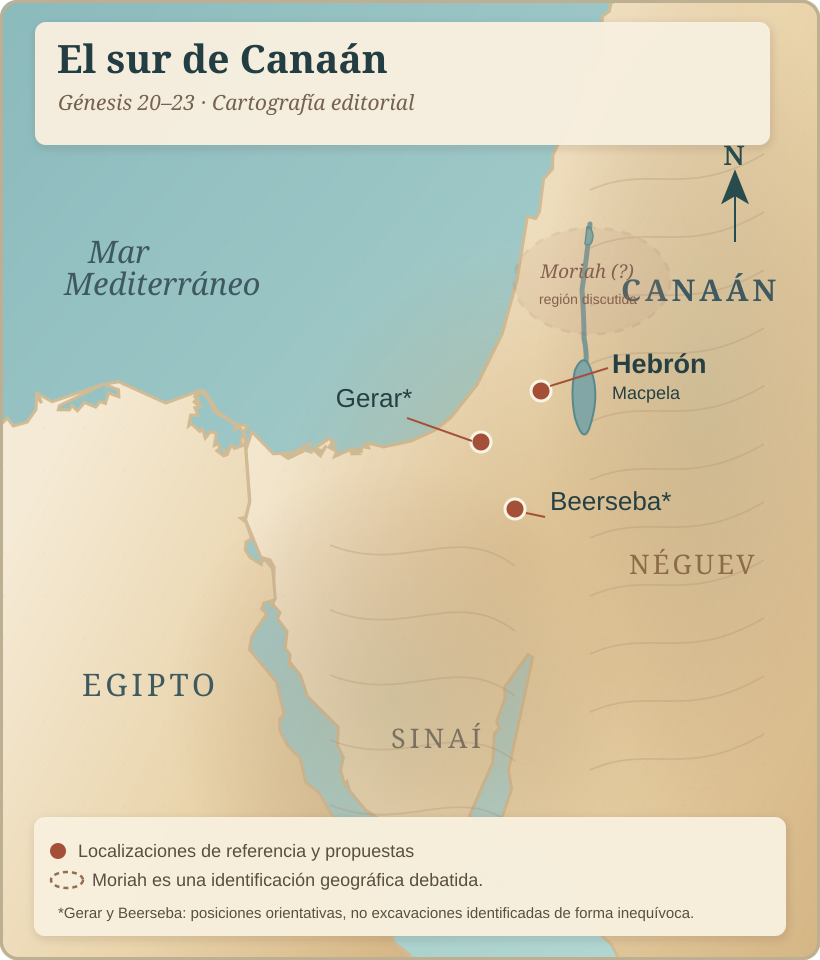
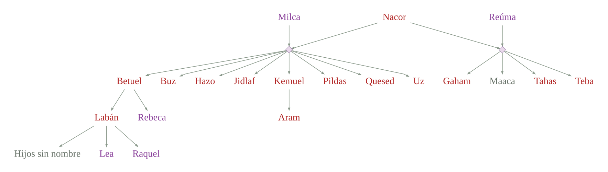

20:1 De allí partió Abraham a la tierra del Neguev, y acampó entre Cades y Shur, y habitó como forastero en Gerar.
20:2 Y dijo Abraham de Sara su mujer: — Es mi hermana. Y Abimelec rey de Gerar envió y tomó a Sara.
20:3 Pero Dios vino a Abimelec en sueños de noche, y le dijo: He aquí, muerto eres, a causa de la mujer que has tomado, la cual es casada con marido.
20:4 Mas Abimelec no se había llegado a ella, y dijo: — Señor, ¿matarás también al inocente?
20:5 ¿No me dijo él: Mi hermana es; y ella también dijo: Es mi hermano? Con sencillez de mi corazón y con limpieza de mis manos he hecho esto.
20:6 Y le dijo Dios en sueños: Yo también sé que con integridad de tu corazón has hecho esto; y yo también te detuve de pecar contra mí, y así no te permití que la tocases.
20:7 Ahora, pues, devuelve la mujer a su marido; porque es profeta, y orará por ti, y vivirás. Y si no la devolvieres, sabe que de cierto morirás tú, y todos los tuyos.
20:8 Entonces Abimelec se levantó de mañana y llamó a todos sus siervos, y dijo todas estas palabras en los oídos de ellos; y temieron los hombres en gran manera.
20:9 Después llamó Abimelec a Abraham, y le dijo: — ¿Qué nos has hecho? ¿En qué pequé yo contra ti, que has atraído sobre mí y sobre mi reino tan grande pecado? Lo que no debiste hacer has hecho conmigo.
20:10 Dijo también Abimelec a Abraham: — ¿Qué pensabas, para que hicieses esto?
20:11 Y Abraham respondió: — Porque dije para mí: Ciertamente no hay temor de Dios en este lugar, y me matarán por causa de mi mujer.
20:12 — Y a la verdad también es mi hermana, hija de mi padre, mas no hija de mi madre, y la tomé por mujer.131
20:13 — Y cuando Dios me hizo salir errante de la casa de mi padre, yo le dije: Esta es la merced que tú harás conmigo, que en todos los lugares adonde lleguemos, digas de mí: Mi hermano es.
20:14 Entonces Abimelec tomó ovejas y vacas, y siervos y siervas, y se los dio a Abraham, y le devolvió a Sara su mujer.
20:15 Y dijo Abimelec: — He aquí mi tierra está delante de ti; habita donde bien te parezca.
20:16 Y a Sara dijo: — He aquí he dado mil monedas de plata a tu hermano; mira que él te es como un velo para los ojos de todos los que están contigo, y para con todos; así fue vindicada.132
20:17 Entonces Abraham oró a Dios; y Dios sanó a Abimelec y a su mujer, y a sus siervas, y tuvieron hijos.
20:18 Porque Jehová había cerrado completamente toda matriz de la casa de Abimelec, a causa de Sara mujer de Abraham.
21:1 Visitó Jehová a Sara, como había dicho, e hizo Jehová con Sara como había hablado.
21:2 Y Sara concibió y dio a Abraham un hijo en su vejez, en el tiempo que Dios le había dicho.
21:3 Y llamó Abraham el nombre de su hijo que le nació, que le dio a luz Sara, Isaac.
21:4 Y circuncidó Abraham a su hijo Isaac de ocho días, como Dios le había mandado.
21:5 Y era Abraham de cien años cuando nació Isaac su hijo.
21:6 Entonces dijo Sara: — Dios me ha hecho reír, y cualquiera que lo oyere, se reirá conmigo.
21:7 Y añadió: — ¿Quién dijera a Abraham que Sara habría de dar de mamar a hijos? Pues le he dado un hijo en su vejez.

21:8 Y creció el niño, y fue destetado; e hizo Abraham gran banquete el día que fue destetado Isaac.
21:9 Y vio Sara que el hijo de Agar la egipcia, el cual esta le había dado a luz a Abraham, se burlaba de su hijo Isaac.133
21:10 Por tanto, dijo a Abraham: — Echa a esta sierva y a su hijo, porque el hijo de esta sierva no ha de heredar con Isaac mi hijo.
21:11 Este dicho pareció grave en gran manera a Abraham a causa de su hijo.
21:12 Entonces dijo Dios a Abraham: No te parezca grave a causa del muchacho y de tu sierva; en todo lo que te dijere Sara, oye su voz, porque en Isaac te será llamada descendencia.
21:13 Y también del hijo de la sierva haré una nación, porque es tu descendiente.
21:14 Entonces Abraham se levantó muy de mañana, y tomó pan, y un odre de agua, y lo dio a Agar, poniéndolo sobre su hombro, y le entregó el muchacho, y la despidió. Y ella salió y anduvo errante por el desierto de Beerseba.
21:15 Y le faltó el agua del odre, y echó al muchacho debajo de un arbusto,
21:16 y se fue y se sentó enfrente, a distancia de un tiro de arco; porque decía: No veré cuando el muchacho muera. Y cuando ella se sentó enfrente, el muchacho alzó su voz y lloró.
21:17 Y oyó Dios la voz del muchacho; y el ángel de Dios llamó a Agar desde el cielo, y le dijo: — ¿Qué tienes, Agar? No temas; porque Dios ha oído la voz del muchacho en donde está.
21:18 Levántate, alza al muchacho, y sostenlo con tu mano, porque yo haré de él una gran nación.
21:19 Entonces Dios le abrió los ojos, y vio una fuente de agua; y fue y llenó el odre de agua, y dio de beber al muchacho.
21:20 Y Dios estaba con el muchacho; y creció, y habitó en el desierto, y fue tirador de arco.
21:21 Y habitó en el desierto de Parán; y su madre le tomó mujer de la tierra de Egipto.

21:22 Aconteció en aquel mismo tiempo que habló Abimelec, y Ficol príncipe de su ejército, a Abraham, diciendo: — Dios está contigo en todo cuanto haces.
21:23 Ahora, pues, júrame aquí por Dios, que no faltarás a mí, ni a mi hijo ni a mi nieto, sino que conforme a la bondad que yo hice contigo, harás tú conmigo, y con la tierra en donde has morado.
21:24 Y respondió Abraham: — Yo juraré.
21:25 Y Abraham reconvino a Abimelec a causa de un pozo de agua, que los siervos de Abimelec le habían quitado.
21:26 Y respondió Abimelec: — No sé quién haya hecho esto, ni tampoco tú me lo hiciste saber, ni yo lo he oído hasta hoy.
21:27 Y tomó Abraham ovejas y vacas, y dio a Abimelec; e hicieron ambos pacto.
21:28 Entonces puso Abraham siete corderas del rebaño aparte.
21:29 Y dijo Abimelec a Abraham: — ¿Qué significan esas siete corderas que has puesto aparte?
21:30 Y él respondió: — Que estas siete corderas tomarás de mi mano, para que me sirvan de testimonio de que yo cavé este pozo.
21:31 Por esto llamó a aquel lugar Beerseba; porque allí juraron ambos.134
21:32 Así hicieron pacto en Beerseba; y se levantó Abimelec, y Ficol príncipe de su ejército, y volvieron a tierra de los filisteos.
21:33 Y plantó Abraham un árbol tamarisco en Beerseba, e invocó allí el nombre de Jehová Dios eterno.
21:34 Y moró Abraham en tierra de los filisteos muchos días.

22:1 Aconteció después de estas cosas, que probó Dios a Abraham, y le dijo: Abraham. Y él respondió: — Heme aquí.
22:2 Y dijo: Toma ahora tu hijo, tu único, Isaac, a quien amas, y vete a tierra de Moriah, y ofrécelo allí en holocausto sobre uno de los montes que yo te diré.135
22:3 Y Abraham se levantó muy de mañana, y enalbardó su asno, y tomó consigo dos siervos suyos, y a Isaac su hijo; y cortó leña para el holocausto, y se levantó, y fue al lugar que Dios le dijo.
22:4 Al tercer día alzó Abraham sus ojos, y vio el lugar de lejos.
22:5 Entonces dijo Abraham a sus siervos: — Esperad aquí con el asno, y yo y el muchacho iremos hasta allí y adoraremos, y volveremos a vosotros.
22:6 Y tomó Abraham la leña del holocausto, y la puso sobre Isaac su hijo, y él tomó en su mano el fuego y el cuchillo; y fueron ambos juntos.
22:7 Entonces habló Isaac a Abraham su padre, y dijo: — Padre mío. Y él respondió: — Heme aquí, mi hijo. Y él dijo: — He aquí el fuego y la leña; mas ¿dónde está el cordero para el holocausto?
22:8 Y respondió Abraham: — Dios se proveerá de cordero para el holocausto, hijo mío. E iban juntos.
22:9 Y cuando llegaron al lugar que Dios le había dicho, edificó allí Abraham un altar, y compuso la leña, y ató a Isaac su hijo, y lo puso en el altar sobre la leña.136
22:10 Y extendió Abraham su mano y tomó el cuchillo para degollar a su hijo.
22:11 Entonces el ángel de Jehová le dio voces desde el cielo, y dijo: — Abraham, Abraham. Y él respondió: — Heme aquí.
22:12 Y dijo: — No extiendas tu mano sobre el muchacho, ni le hagas nada; porque ya conozco que temes a Dios, por cuanto no me rehusaste tu hijo, tu único.
22:13 Entonces alzó Abraham sus ojos y miró, y he aquí a sus espaldas un carnero trabado en un zarzal por sus cuernos; y fue Abraham y tomó el carnero, y lo ofreció en holocausto en lugar de su hijo.
22:14 Y llamó Abraham el nombre de aquel lugar, Jehová proveerá. Por tanto se dice hoy: En el monte de Jehová será provisto.137
22:15 Y llamó el ángel de Jehová a Abraham por segunda vez desde el cielo,
22:16 y dijo: Por mí mismo he jurado, dice Jehová, que por cuanto has hecho esto, y no me has rehusado tu hijo, tu único hijo;
22:17 de cierto te bendeciré, y multiplicaré tu descendencia como las estrellas del cielo y como la arena que está a la orilla del mar; y tu descendencia poseerá las puertas de sus enemigos.
22:18 En tu simiente serán benditas todas las naciones de la tierra, por cuanto obedeciste a mi voz.
22:19 Y volvió Abraham a sus siervos, y se levantaron y se fueron juntos a Beerseba; y habitó Abraham en Beerseba.

22:20 Aconteció después de estas cosas, que fue dada noticia a Abraham, diciendo: — He aquí que también Milca ha dado a luz hijos a Nacor tu hermano:
22:21 Uz su primogénito, Buz su hermano, Kemuel padre de Aram,
22:22 Quesed, Hazo, Pildas, Jidlaf y Betuel.
22:23 Y Betuel fue el padre de Rebeca. Estos son los ocho hijos que dio a luz Milca, de Nacor hermano de Abraham.
22:24 Y su concubina, que se llamaba Reúma, dio a luz también a Teba, a Gaham, a Tahas y a Maaca.

23:1 Fue la vida de Sara ciento veintisiete años; tantos fueron los años de la vida de Sara.
23:2 Y murió Sara en Quiriat-arba, que es Hebrón, en la tierra de Canaán; y vino Abraham a hacer duelo por Sara, y a llorarla.
23:3 Y se levantó Abraham de delante de su muerta, y habló a los hijos de Het, diciendo:
23:4 — Extranjero y forastero soy entre vosotros; dadme propiedad para sepultura entre vosotros, y sepultaré mi muerta de delante de mí.138
23:5 Y respondieron los hijos de Het a Abraham, y le dijeron:
23:6 — Óyenos, señor nuestro; eres un príncipe de Dios entre nosotros; en lo mejor de nuestros sepulcros sepulta a tu muerta; ninguno de nosotros te negará su sepulcro, ni te impedirá que entierres tu muerta.139
23:7 Y Abraham se levantó, y se inclinó al pueblo de aquella tierra, a los hijos de Het,
23:8 y habló con ellos, diciendo: — Si tenéis voluntad de que yo sepulte mi muerta de delante de mí, oídme, e interceded por mí con Efrón hijo de Zohar,
23:9 para que me dé la cueva de Macpela, que tiene al extremo de su heredad; que por su justo precio me la dé, para posesión de sepultura en medio de vosotros.140
23:10 Este Efrón estaba entre los hijos de Het; y respondió Efrón heteo a Abraham, en presencia de los hijos de Het, de todos los que entraban por la puerta de su ciudad, diciendo:141
23:11 — No, señor mío, óyeme: te doy la heredad, y te doy también la cueva que está en ella; en presencia de los hijos de mi pueblo te la doy; sepulta tu muerta.
23:12 Entonces Abraham se inclinó delante del pueblo de la tierra,
23:13 y respondió a Efrón en presencia del pueblo de la tierra, diciendo: — Antes, si te place, te ruego que me oigas. Yo daré el precio de la heredad; tómalo de mí, y sepultaré en ella mi muerta.
23:14 Respondió Efrón a Abraham, diciéndole:
23:15 — Señor mío, escúchame: la tierra vale cuatrocientos siclos de plata; ¿qué es esto entre tú y yo? Entierra, pues, tu muerta.142
23:16 Entonces Abraham se convino con Efrón, y pesó Abraham a Efrón el dinero que dijo, en presencia de los hijos de Het, cuatrocientos siclos de plata, de buena ley entre mercaderes.143144
23:17 Y quedó la heredad de Efrón que estaba en Macpela al oriente de Mamre, la heredad con la cueva que estaba en ella, y todos los árboles que había en la heredad, y en todos sus contornos,
23:18 como propiedad de Abraham, en presencia de los hijos de Het y de todos los que entraban por la puerta de la ciudad.
23:19 Después de esto sepultó Abraham a Sara su mujer en la cueva de la heredad de Macpela al oriente de Mamre, que es Hebrón, en la tierra de Canaán.
23:20 Y quedó la heredad y la cueva que en ella había, de Abraham, como una posesión para sepultura, recibida de los hijos de Het.

Notas del editor
- 131En Gn 11:27-32, Sara no fue presentada como hija de Taré, eso puede significar que Abraham está mintiendo para justificarse o que ese detalle se omitió hasta ahora. Más adelante, este tipo de matrimonios entre hermanos será prohibido por Dios (Lev. 18:9, 20:17) ↩
- 132He dado dinero a tu marido como compensación, así todos sabrán que eres inocente. ↩
- 133La gran mayoría de traducciones en inglés y en español coinciden es traducir mesaheq como “burlarse”. Sin embargo, hay que notar que esas mismas versiones la traducen como “acariciar” o “jugar” en Gen 26:8. Al parecer, el verbo cubre una amplia gama de reacciones desde “reír de alegría” a “reírse con desprecio”, dependiendo del contexto. El problema es que el contexto aquí es ambiguo porque podría ser que efectivamente los niños estuvieran divirtiéndose y la propia Sara lo malinterpretara o lo desaprobara. ↩
Estudio relacionado: Onwukwe (2022)
- 134El nombre hebreo Beʾer Ševaʿ, «Beerseba», permite un juego de palabras entre ševaʿ, «siete», y šāvaʿ, «jurar». El relato relaciona así las siete corderas entregadas por Abraham con el juramento que ambos hombres realizaron junto al pozo. El topónimo puede entenderse como «pozo de los siete» o, tradicionalmente, «pozo del juramento». ↩
- 135La expresión «tu hijo, tu único» resulta llamativa porque Abraham también era padre de Ismael. El término hebreo yāḥîd puede expresar la condición de hijo único, pero también la de hijo singularmente amado o especialmente valioso. En este contexto se refiere a Isaac como hijo de la promesa y heredero del pacto, sin negar la existencia de Ismael. ↩
- 136En la tradición judía, este episodio se conoce como la Aqedá, «atadura» o «ligadura», por el verbo hebreo utilizado cuando Abraham ata a Isaac sobre el altar. El relato ocupa un lugar central en la reflexión judía sobre la fe, la obediencia y la relación entre Dios y Abraham. ↩
- 137YHWH yirʾeh,«Jehová proveerá», contiene un juego de palabras con la forma del verbo rāʾāh, «ver». Dios "ve" la necesidad y "provee" para cubrirla. ↩
- 138Abraham, como jefe de un clan nómada, no poseía tierra en propiedad. Esta adquisición no es un hecho improvisado fruto de una necesidad sobrevenida y apremiante (la muerte de Sara); sino que tiene una intencionalidad muy concreta: establecer la conexión de Abraham, su clan y su desccendencia, con Canaán,. Hasta entonces habían sido extranjeros de paso por esa tierra pero a partir de ese momento, podrán reclamar derecho de residencia gracias al único espacio que un pueblo móvil podía mantener: su tumba. Esto se ve claramente en el hecho de que Abraham no adquiere simplemente una parcela de tierra para enterrar a Sara sino que compra una cueva completa con sus aledaños que va a servir de mausoleo familiar para él y sus descendientes. Todo el intercambio que se produce en esta secuencia tiene una intención de legitimación legal sobre el derecho de asentamiento de los descendientes de Abraham en Canaán. ↩
Estudio relacionado: Westbrook (1971)
- 139El primer paso de la compra-venta es la solicitud de licencia a la autoridad, la cuál se lo concede en base a la reputación de Abraham entre los heteos. Así, los cananeos aceptan considerar a Abraham como residente legal y permanente. ↩
- 140Abraham pasa a definir los límites del terreno que quiere adquirir. ↩
- 141Tras la autorización pública, empieza la negociación privada, enfrente de testigos. ↩
- 142Tasación del terreno de parte del vendedor. Abraham, en contra del uso habirual, no intenta regatear el precio; probablemente para evitar deslegitimaciones posteriores. ↩
- 143Los siclos aquí no eran una moneda sino una unidad de peso cuyo valor específico dependía de cada pueblo. ↩
- 144Para transacciones entre comerciantes de distintos orígines culturales, existía una medida comúnmente aceptada. ↩